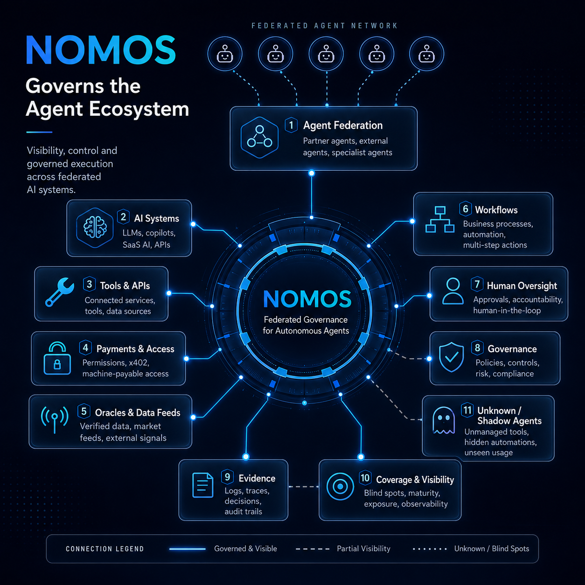

Nothing is claimed on this page while its evidence cannot be loaded and checked.
The canonical artifacts remain readable in the repository under
docs/evidence/cp-h2/.
From proof of payment to proof of action
NOMOS Governed x402 Settlement
A policy-bound autonomous payment, executed on Hedera Testnet and verified
against ledger evidence.
Recorded evidence, read from committed artifacts at build time. This page
performs no live query, so nothing here is presented as “live”.
02Governed payment flow
Eight links, each committing to the one before it. The chain is what makes
the payment mean something more specific than “money moved”.
The binding
quote_id—issued by the policy decision, in the 402 challenge
≡
on-chain memo—in the Hedera transaction, on the public ledger
Without this equality a verifier can establish only that someone sent the
right amount to the right account. With it, the ledger itself names the
quote that was paid for — and that quote is bound to one specific request
hash and one specific policy decision. A payment carrying a missing or
foreign memo buys nothing.
03On-chain evidence
Public values only. No key material, no internal path and no secret appears
on this page or in the files that build it.
The Mirror Node record is the source the verification actually used. The
HashScan link is offered for human inspection: HashScan is a client-rendered
application that serves 404 to non-browser clients, so it could not be
machine-checked and is not treated as evidence.
Verification results recorded at CP-H2
Check
Result
Detail
04Proof of Action
Two different documents, routinely confused.
Proof of Payment
Evidences the ledger transfer: this amount, from this account, to that
account, at this consensus time. It is a receipt for a transfer.
It cannot say who was allowed to spend, what was bought, whether anything
was delivered, or whether the delivered thing is the thing that was paid for.
Proof of Action
Binds payment, request, policy decision, execution and result into one
signed, tamper-evident record. It is a receipt for a transaction
in the older sense of the word.
Only hashes travel. The record type has no field capable of carrying request
or result content, on chain or in the receipt.
Canonical proof-of-action receipt
—
—
record_digest
—
Signature
—
Key id
—
Domain
—
Canonicalization
—
HCS anchor
—
You do not have to take the digest on trust. This recomputes SHA-256 over the
canonical form of the receipt record in your browser and
compares it with the digest the receipt carries — and it repeats the same
check against a deliberately altered copy. It reads the committed receipt.
It does not create, re-sign or alter one.
SHA-256 over RFC 8785 (JCS) canonical bytes.
Verify it yourself, without this page
The standalone verifier recomputes every digest from the receipt’s own
contents and checks the signature against the key set you supply —
not the one the document asserts about itself.
—
The signed record, in full
Exactly the bytes that were canonicalized and signed. Hashes stand in for content by design.
—
04bConsensus anchor
A timestamp and an order, from a third party.
Hedera Consensus Service
—
—
The signed receipt was not changed. It still carries
anchor: null and is byte-identical to the artifact produced in
CP-H2. A receipt is signed over its canonical bytes, so writing an anchor
into it would break the very signature it exists to carry.
The anchor is therefore separate evidence, bound by digest:
the message on the topic names the receipt id and the record digest, which
is what lets anyone check it against the receipt rather than having
to trust a claim inside it.
What Hedera contributes is narrow and real: a consensus timestamp and
an ordering for those bytes. It does not attest that the underlying
work was correct, and it does not replace verifying the evidence chain —
the policy decision, the settlement and the delivery hash above.
You can read the topic yourself. This fetches message
#1 from a public mirror node and compares the bytes
with the envelope recorded here. If the network is unreachable — offline, a
blocked host, or a mirror node having a bad day — the result is
live verification unavailable, which is a statement about the
network and not about the anchor.
The most instructive thing that happened, kept in.
The payment was correct on chain — right amount, right payee, right memo —
and the verifier refused it.
—
Fix.—
Regression.—
Recorded refusal · —
—
Read from docs/evidence/cp-h2/execute-run.json, the run that
produced the refusal. It was not edited afterwards.
06NOMOS architecture
Payment is one link in a governance chain, not the chain itself.

Asset slot — image not present
apps/demo-ui/public/assets/nomosdemo.png
Drop the file at that exact path and reload; nothing else needs to change.
No substitute diagram has been invented in its place.
NOMOS as the governance centre of a federated agent ecosystem. The x402 settlement evidenced above sits in domain 4, “Payments & Access” — one link, not the chain.
Open full size, 1254 × 1254↗
01
External agents do not execute unchecked. A request reaches a service only after identity and delegated authority have been established.
02
Policy decides before money moves. Network, asset, payee, amount, spend caps, quote lifetime and nonce are all evaluated before a price is quoted.
03
Refusals are evidence too. ALLOW, DENY and REVIEW all produce a signed decision carrying the same complete field set. A denial nobody can audit is not governance.
04
Delivery is gated on settlement, not on verification. Work is released only after a final, memo-bound settlement read from the ledger.
05
Decisions stay reconstructable and bounded. Every step commits to a hash the next step carries, and the caps that constrain the agent are part of the signed record.
Technical architecture — the AgentNOMOS twelve layers
The detailed layer view. It is deliberately not the first thing on this page:
the governance argument above is the part that has to land first.
It is the wider architecture, not a description of what was built for this
checkpoint. What the evidence above demonstrates is a narrow vertical slice
of the same concerns — an established agent identity, one governed payment,
a signed evidence record and an execution released only after settlement.
The remaining layers appear here as design, and no part of this page claims
they are implemented or exercised.
“
NOMOS executed a policy-bound x402 payment on Hedera Testnet, verified the
settlement against Mirror Node evidence, and produced a tamper-evident
Proof-of-Action receipt.